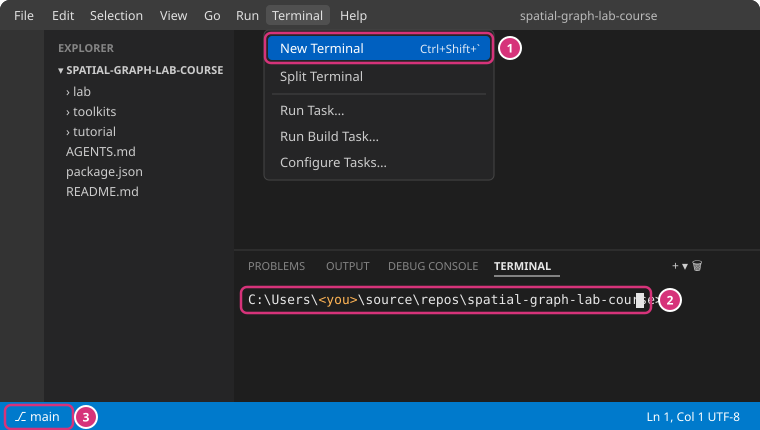
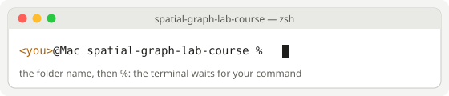
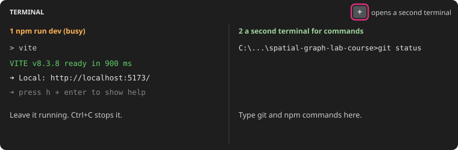

Page 5 of 12 · B. Make your toolkit
Set up your computer
Once, on the laptop you bring to class: the programs, the course folder from GitHub, and the app running on your laptop. No programming experience is needed.
Orange text like <toolkit-id> = replace it with your own. Grey buttons like Copy = something to click.
Steps 01–05: the Before Session 2 checklist GitHub account, VS Code, Git, Node.js and an AI coding agent: the same five steps you did at home, with the same links and fixes.
01Create or check your GitHub account
Create a free GitHub account, or check you can sign in to an existing one.
Create or check your GitHub account
Create a free GitHub account, or check you can sign in to an existing one.
- Go to GitHub and create a free account, or sign in to your existing one.
- Verify your email address if requested.
- Keep track of your GitHub username; you'll use it in the workshop.
Troubleshooting — common issues
My verification email hasn't arrived
- Check your spam or junk folder.
- Check that the email address you entered is correct.
- Use GitHub's option to resend the verification email.
I already have a GitHub account
- Use your existing account. You do not need to create another one.
02Install Visual Studio Code
Install the editor we will use in the workshop.
Install Visual Studio Code
Install the editor we will use in the workshop.
- Download VS Code for your operating system.
- Install it using the normal installer.
- Open VS Code and check that the editor launches.
Note. Choose Visual Studio Code (VS Code), not the separate Visual Studio IDE.
Troubleshooting — common issues
I downloaded Visual Studio, not Visual Studio Code
- Go back to the official VS Code download page.
- Download Visual Studio Code, the lighter code editor, not Visual Studio.
- Run the installer and open Visual Studio Code.
VS Code asks whether I trust a folder
- This is normal when opening projects.
- Only trust folders whose origin you know.
- We'll open the workshop project together in class (step 10).
03Install Git
Git tracks changes and lets you work on your own branch without altering the main project.
Install Git
Git tracks changes and lets you work on your own branch without altering the main project.
For Windows, the normal installer is easier than using the command line. On macOS, Git may already be present.
Windows
- Download Git for Windows.
- Run the installer (the
.exefile). Keep the default settings. - Restart VS Code after installation.
Before your first command: make Command Prompt VS Code's terminal. VS Code opens PowerShell by default, which refuses npm on many laptops. In the terminal panel: the arrow next to + › Select Default Profile › Command Prompt, then close the old terminal and open a new one (step 07 has the pictures).
Optional: on the installer page “Choosing the default editor used by Git” you may pick Visual Studio Code instead of Vim. Keep everything else as it is.
macOS
- Open Terminal on your Mac (Finder › Applications › Utilities › Terminal, or search “Terminal” with Cmd+Space).
- Run
git --version. - If macOS asks to install Command Line Tools, accept and finish the installation. If Git is already installed, you don't need to do anything else.
- Restart VS Code if it was open.
Alternative Git install options ↗
macOS asks me to install Command Line Tools
- Choose Install when prompted.
- Let the installation finish.
- Close and reopen Terminal and run
git --versionagain.
Check it: in VS Code, choose Terminal › New Terminal, then type:
git --version
Example result
git version 2.50.1The version number on your computer may be different. That's fine.
Troubleshooting — common issues
Git is not recognised when I check the version
- Close all VS Code windows and restart VS Code.
- Open Terminal › New Terminal and try
git --versionagain. - If it still fails, repeat the installation steps above.
04Install Node.js (LTS)
Node.js is needed to install dependencies and run Spatial Graph Lab locally.
Install Node.js (LTS)
Node.js is needed to install dependencies and run Spatial Graph Lab locally.
Node.js allows the application to run locally. Use the LTS version (the stable release intended for longer-term use). It brings npm, which installs and runs the app.
Windows
Simple method: download and run the Windows installer (.msi) from nodejs.org, choosing LTS.
Or install with a command (optional)
- Click the Start button (Windows icon).
- Type Terminal and open Windows Terminal. If unavailable, search for PowerShell instead.
- Paste this command and press Enter:
winget install OpenJS.NodeJS.LTS
If Windows says winget is not recognised, use the installer above instead.
macOS
Simple method: download the macOS installer (.pkg) from nodejs.org, choosing LTS. Open the downloaded file and follow the installation steps.
This avoids requiring Homebrew or other command-line installation tools.
Restart VS Code, then open Terminal › New Terminal. Run these commands one at a time:
node --version
npm --version
Example results
v26.13.1 11.6.2Your numbers can differ. Both lines should show a version, without an error. Any Node.js from v22.12 up works; the current LTS does.
Troubleshooting — common issues
Node.js or npm is not recognised
- Restart VS Code after installing Node.js.
- Open Terminal › New Terminal.
- Run
node --versionandnpm --versionagain, one at a time. - If either still fails, use the official LTS installer linked above.
Windows PowerShell says running scripts is disabled
- In VS Code, open Terminal › New Terminal.
- Use the arrow next to the + in the terminal panel and select Command Prompt.
- Run
npm --versionthere.
You do not need to change Windows security settings. Make Command Prompt the default (step 07).
My Node.js version number is different
- That is normal. You should see a version beginning with
vfor Node.js and a number for npm, rather than an error.
05Register for an AI coding agent
Choose between Codex, Claude Code and GitHub Copilot.
Register for an AI coding agent
Choose between Codex, Claude Code and GitHub Copilot.
Choose one AI coding agent that works with VS Code. You do not need to install all three. The workshop does not require a particular provider.
OpenAI Codex (VS Code extension)
- Check that your ChatGPT account or organisation provides Codex access.
- In VS Code, open Extensions and search for the official Codex extension by OpenAI.
- Install it and sign in; confirm the Codex panel opens.
Use an eligible ChatGPT plan or organisation-provided Codex access. Paid ChatGPT plans such as Plus or Pro may provide access; limits vary by plan.
Claude Code (VS Code extension)
- Check that you have an eligible Claude subscription or API access.
- Open Extensions in VS Code and install the official Claude Code extension by Anthropic.
- Sign in and check that the Claude Code panel opens.
Use an eligible paid Claude plan (such as Pro or Max), a qualifying organisation account, or funded Anthropic API access. A basic free Claude chat account alone does not guarantee Claude Code access.
GitHub Copilot (Free tier and student benefits)
- In VS Code, open Chat and follow the GitHub sign-in prompts (or install GitHub Copilot via Extensions if prompted).
- Activate Copilot Free if required.
- Check that you can open Chat and select Agent mode.
Copilot Free has usage limits; eligible verified students can access Copilot Student benefits.
Optional: apply for free GitHub student benefits
Eligible verified students may receive extra GitHub Copilot access without buying a subscription.
- Visit GitHub Education.
- Sign in to your GitHub account and follow the student verification instructions.
- If approval is pending, you can still prepare using Copilot Free or another agent.
No purchase needed. No purchase is required for this checklist. If you don't have paid Codex or Claude access, Copilot Free is one option. We will use AI during the session, but choose the tool that is available to you. Out of quota during the session? Continue with any AI chat in the browser (page 8).
Troubleshooting — common issues
I can't find Extensions in VS Code
- Open View › Extensions, or select the Extensions icon in the left sidebar.
- Search for the official extension for your chosen agent.
The agent keeps asking me to sign in
- Select Sign in inside VS Code.
- Finish the sign-in in your browser, then return to VS Code.
I can't find Agent mode
- Restart or update VS Code.
- Confirm you are signed in and the relevant extension is enabled.
- Follow the setup guide for the agent you chose.
The agent asks for payment or shows a usage limit
- Do not buy anything just to complete this checklist.
- Check whether Copilot Free or GitHub Education is available to you.
- Ask the tutor if you are unsure which option to choose.
In the session
Join the course on GitHub, copy its folder to your laptop and run the app there.
06Join the course on GitHub
Anyone can download the course; only invited students can send work back.
Join the course on GitHub
Anyone can download the course; only invited students can send work back.
- Send your GitHub username to your tutorThe way your tutor asked (a form or a message), as early as you can: the invitation needs it. Your username is shown at the top right of GitHub when you click your picture.
- Accept the invitationFrom the e-mail GitHub sends, or at the course's invitations page (signed in to GitHub). Invitations expire after 7 days: ask your tutor to send a new one if yours has.
the course repository opens on GitHub without an invitation banner.
No invitation yet? Go on: everything up to your first push works without it. Only pushing your work to GitHub needs it.
Problem: no invitation, or “404”.
07Open a terminal
A window where you type commands instead of clicking.
Open a terminal
A window where you type commands instead of clicking.
A terminal is a window where you type a command and press Enter; the computer runs it and prints its answer. You use it for git and npm. Use the one inside VS Code: Terminal › New Terminal. It opens at the bottom of the window.

Windows
Use Command Prompt, not PowerShell. Every Windows command on these pages is written for Command Prompt. VS Code starts with PowerShell (the prompt starts with PS), so make Command Prompt the default once:
- In the terminal panel, click the arrow next to + › Select Default Profile.
- Choose Command Prompt.
- Close the PowerShell terminal (the bin icon) and open a new one: Terminal › New Terminal.


PS at the start. <you> is your own Windows user name.macOS
VS Code opens zsh, the same as the Terminal app. Nothing to change.

%.To run a command: click in the terminal, paste it (Ctrl+V, or right-clickCmd+V) and press Enter. One command at a time: each dark box on these pages is one command with its own Copy.
Other ways to open a terminal in a folder (optional)
Windows
Windows 11: in File Explorer, right-click the folder › Open in Terminal. It opens PowerShell: type cmd and press Enter first, to switch to Command Prompt.
macOS
In Finder, right-click the folder › Services › New Terminal at Folder. Not in the menu? Turn it on once: System Settings › Keyboard › Keyboard Shortcuts › Services › Files and Folders › New Terminal at Folder.
VS Code's own terminal stays the easiest: it always opens in the folder VS Code has open.
08Tell Git who you are
Once per computer: every commit carries a name and an e-mail.
Tell Git who you are
Once per computer: every commit carries a name and an e-mail.
Use your GitHub username and your GitHub no-reply e-mail. The course repository is public and every commit shows its name and e-mail to anyone. The no-reply address keeps your real e-mail private. Your branch, README and commit name are public too: no student number, passwords or keys in them.
- Get your no-reply e-mailOn GitHub: your picture (top right) › Settings › Emails › tick Keep my email addresses private. Copy the address shown there that ends in
@users.noreply.github.com, such as12345678+hkent@users.noreply.github.com. - Type both here
Remembered only in this browser. Copy stays off until the orange part is filled in.
- Run the two commands, one at a time
git config --global user.name "<your-github-username>"
git config --global user.email "<your-no-reply-email>"
Nothing is printed when it works. Check:
git config --global user.email
your address ending in
@users.noreply.github.com.
Problems later: “Please tell me who you are” · GH007 … email privacy.
09Copy (clone) the course folder
Download the course repository, with its history, to your laptop.
Copy (clone) the course folder
Download the course repository, with its history, to your laptop.
- Go to your repositories folderYour code lives in
source\repos(macOS:source/repos) in your home folder, not in Documents, which OneDrive or iCloud may sync.mkdirmakes the folder,cd(“change directory”) goes into it.Windows (Command Prompt)
mkdir "%USERPROFILE%\source\repos"
“A subdirectory or file … already exists” is fine.
cd /d "%USERPROFILE%\source\repos"
the prompt ends in
\source\repos>.macOS
mkdir -p ~/source/repos
cd ~/source/repos
the prompt ends in
repos %. - Clone it
git clone https://github.com/HME-Research/spatial-graph-lab-course.git
“Cloning into 'spatial-graph-lab-course'…”, then the prompt again. No sign-in is needed: the course is public.
Or with GitHub Desktop, without typing (optional)
Install GitHub Desktop and sign in. Then File › Clone repository… › URL › https://github.com/HME-Research/spatial-graph-lab-course, and set Local path to C:\Users\<you>\source\repos\spatial-graph-lab-course/Users/<you>/source/repos/spatial-graph-lab-course (GitHub Desktop suggests Documents\GitHub instead) › Clone. If it asks How are you planning to use this fork?, choose For my own purposes.
Problems: “cannot find the path” · “already exists” · all set-up problems.
10Open it in VS Code
So that VS Code, its terminal and your agent all work in the course folder.
Open it in VS Code
So that VS Code, its terminal and your agent all work in the course folder.
- Open the folderFile › Open Folder… › choose
spatial-graph-lab-coursein your repositories folder.If VS Code asks whether you trust the authors: Yes, I trust the authors (this is the course folder, so it is safe).Windows
In the dialog, type
%USERPROFILE%\source\reposin the address bar and press Enter, then choose the folder.macOS
In the dialog, press Cmd+Shift+G, type
~/source/reposand press Enter, then choose the folder. - Open a terminal in itTerminal › New Terminal: it starts in the course folder.
C:\Users\<you>\source\repos\spatial-graph-lab-course>(Command Prompt, step 07)<you>@Mac spatial-graph-lab-course %
Next time: File › Open Recent.
11Install what the app needs
Once, and again when the course says so.
Install what the app needs
Once, and again when the course says so.
npm install
after 5–10 minutes (it downloads about 1.5 GB; longer on busy Wi-Fi), “added … packages” and the prompt again. Warnings are fine; ERR! is not.
While it runs, go on with planning your toolkit in your browser.
Problems: ERR! · “running scripts is disabled” · “Could not read package.json”.
12Start the app
It runs on your laptop and opens in your browser.
Start the app
It runs on your laptop and opens in your browser.
npm run dev
Local: http://localhost:5173/. localhost means “this computer”: the app is served by your own laptop, not by the internet. Open the address in your browser (or Ctrl-clickCmd-click it): the app's Welcome screen.
The terminal is busy while the app runs. It shows no prompt and takes no commands until you stop the app. For other commands, open a second terminal with the + in the terminal panel.

These pages write http://localhost:5173/; if it printed another number, use that one.
Problems: “Port 5173 is in use” · “localhost refused to connect”.
13Stop the app
When you are done.
Stop the app
When you are done.
Click in the terminal where it runs and press Ctrl+C, also on a Mac (Control, not Command). On Windows, if it asks “Terminate batch job (Y/N)?”, type Y and press Enter.
the prompt comes back, and the app no longer loads in the browser.
the app's Welcome screen opened at localhost, and git config --global user.email shows your no-reply address. Next: plan and claim your toolkit.
Questions? Ask in the workshop Slack channel. It helps to include your operating system, the step number and any error message or screenshot. Please don't post passwords, API keys or authentication codes.
Checklist selections are saved only in this browser on this device. These pages work offline after downloading, but installation links require internet access. More help: VS Code documentation · Pro Git book · GitHub documentation · 12. Help.